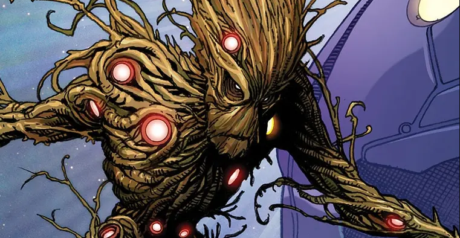
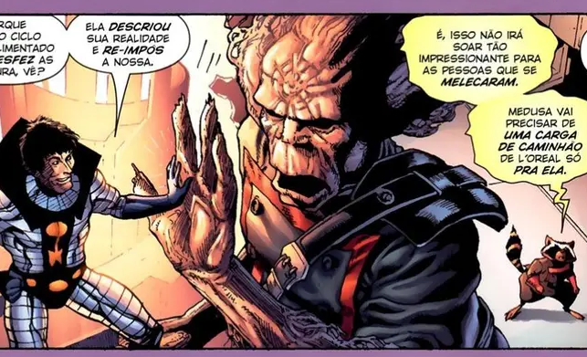

Quem vê aquela árvore bondosa dublada pelo Vin Diesel, pode não imaginar que, no começo de tudo, Groot era um vilão da Marvel.
Groot, na verdade, pertence à espécie dos Colossos Florais, uma antiga raça alienígena que acreditava-se estar extinta.
Em sua primeira aparição, Groot foi apenas um monstro genérico que surgiu para ameaçar a humanidade ao cair, acidentalmente, na Terra. Depois de ser derrotado, o personagem fugiu para o espaço, onde permaneceu durante muitos anos.
Como já falamos anteriormente, Groot nem sempre foi uma boa pessoa na Marvel. Quando ele ainda era mais jovem, nas páginas dos quadrinhos, e aparecia para enfrentar nossos famosos heróis, o personagem declarava-se o Monarca do Planeta X e pretendia abduzir a raça humana para realizar experimentos genéricos. Apenas em 2006 sua mitologia foi alterada e Groot se tornou o personagem que conhecemos e amamos.

Você pode estar se perguntando de onde veio a inspiração para o nome Groot. A verdade é que caso você fale Holandês, você já matou essa charada há muito tempo.
A palavra Groot significa Grande em Holandês. A escolha do nome não foi por acaso, já que além de ser um gigante, Groot também é capaz de aumentar de tamanho, como vimos na cena da prisão em Guardiões da Galáxia.
